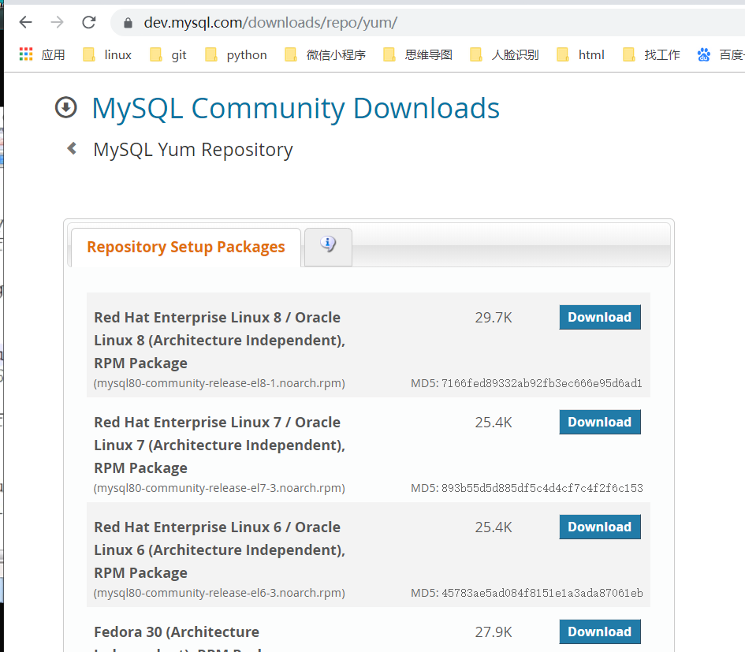
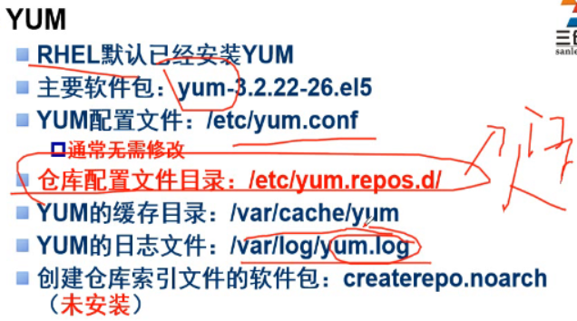

概况
rpm： redhat Packages manager 红帽公司推荐的软件包管理工具
rpm 是redhat和centos系统里使用的软件安装包- 程序写出来的时候都源代码—》工具制作成—》rpm包
rpm包安装优点：
1.简单 2.快捷编译安装：
1.可以指定安装参数（路径、定制功能）Source Code
- 缺点：
安装步骤多
所需要时间长
- 缺点：
我们去买衣服：
1.专卖店—》rpm
2.去裁缝店 –》编译安装
rpm方式安装软件：
1.rpm包哪里来？
镜像文件
官方网站–》mysql
第3方平台 epel、pbone
www.pbone.net
2.如何安装、卸载、查询、升级？
linux：
1.redhat系
redhat、centos、opensuse、redflag、oracle linux、fedora等
软件包.rpm
2.debian系
debian、ubuntu
软件包.deb
注：
软件类型
rpm包从哪得到？
1.将镜像文件放入光驱
2.挂载光驱到/mnt目录
mount 是挂载磁盘或者光盘、u盘的工具
挂载点：其实就是一个目录，通过这个目录可以访问到硬件（光驱）里的镜像文件了
cdrom 是光驱
默认情况下光盘里的内容是只读的
1 | [root@cali_feng ~]# mount /dev/cdrom /mnt 相当于win的插入u盘 |
3.进入挂载点
1 | [root@cali_feng ~]# cd /mnt |

RPM命令
软件管理命令：
1.安装
rpm -ivh 软件包的名字
{-i|–install}
[-h,–hash]
1 | [root@cali_feng Packages]# rpm -i tree-1.6.0-10.el7.x86_64.rpm |
2.卸载
{-e|–erase}
1 | [root@cali_feng Packages]# rpm -e tree |
3.查询
{-q|–query}
[-a,–all]
1 | [root@cali_feng Packages]# rpm -q mysql |
-qa:查看系统中已经安装的所有RPM包列表all
1
2
3
4
5
6
7
8
9
10
11
12
13
14[root@cali_feng Packages]# rpm -qa|wc -l
400
[root@cali_feng Packages]# rpm -qa |grep mysql
mysql-community-common-5.7.25-1.el7.x86_64
mysql-community-embedded-5.7.25-1.el7.x86_64
mysql-community-test-5.7.25-1.el7.x86_64
mysql-community-libs-5.7.25-1.el7.x86_64
mysql-community-client-5.7.25-1.el7.x86_64
mysql-community-server-5.7.25-1.el7.x86_64
mysql-community-embedded-devel-5.7.25-1.el7.x86_64
mysql-community-embedded-compat-5.7.25-1.el7.x86_64
mysql-community-devel-5.7.25-1.el7.x86_64
mysql-community-libs-compat-5.7.25-1.el7.x86_64
[root@cali_feng Packages]#
-qi:查询软件的信息
1
2
3
4
5
6
7
8
9
10
11
12
13
14
15
16
17
18
19
20
21
22
23
24
25
26
27
28
29
30
31
32
33
34
35
36[root@RouterB mnt]# rpm -qi python
Name : python
Version : 2.7.5
Release : 68.el7
Architecture: x86_64
Install Date: 2019年10月10日 星期四 03时36分41秒
Group : Development/Languages
Size : 80907
License : Python
Signature : RSA/SHA256, 2018年04月25日 星期三 19时38分11秒, Key ID 24c6a8a7f4a80eb5
Source RPM : python-2.7.5-68.el7.src.rpm
Build Date : 2018年04月11日 星期三 16时03分06秒
Build Host : x86-01.bsys.centos.org
Relocations : (not relocatable)
Packager : CentOS BuildSystem <http://bugs.centos.org>
Vendor : CentOS
URL : http://www.python.org/
Summary : An interpreted, interactive, object-oriented programming language
Description :
Python is an interpreted, interactive, object-oriented programming
language often compared to Tcl, Perl, Scheme or Java. Python includes
modules, classes, exceptions, very high level dynamic data types and
dynamic typing. Python supports interfaces to many system calls and
libraries, as well as to various windowing systems (X11, Motif, Tk,
Mac and MFC).
Programmers can write new built-in modules for Python in C or C++.
Python can be used as an extension language for applications that need
a programmable interface.
Note that documentation for Python is provided in the python-docs
package.
This package provides the "python" executable; most of the actual
implementation is within the "python-libs" package.
[root@RouterB mnt]#
-ql:查询指定软件包所安装的目录、文件列表—-》安装到哪去了？
1
2
3
4
5
6
7
8
9
10
11
12[root@RouterB mnt]# rpm -ql python
/usr/bin/pydoc
/usr/bin/python
/usr/bin/python2
/usr/bin/python2.7
/usr/share/doc/python-2.7.5
/usr/share/doc/python-2.7.5/LICENSE
/usr/share/doc/python-2.7.5/README
/usr/share/man/man1/python.1.gz
/usr/share/man/man1/python2.1.gz
/usr/share/man/man1/python2.7.1.gz
[root@RouterB mnt]#
-qc:仅显示指定软件包安装的配置文件
1
2
3
4[root@RouterB mnt]# rpm -qc yum
/etc/logrotate.d/yum
/etc/yum.conf
/etc/yum/version-groups.conf
-qd:仅显示指定软件包安装的文档文件 document
1
2
3
4
5
6
7
8
9
10
11
12
13[root@RouterB mnt]# rpm -qd yum
/usr/share/doc/yum-3.4.3/AUTHORS
/usr/share/doc/yum-3.4.3/COPYING
/usr/share/doc/yum-3.4.3/ChangeLog
/usr/share/doc/yum-3.4.3/INSTALL
/usr/share/doc/yum-3.4.3/PLUGINS
/usr/share/doc/yum-3.4.3/README
/usr/share/doc/yum-3.4.3/TODO
/usr/share/doc/yum-3.4.3/comps.rng
/usr/share/man/man5/yum.conf.5
/usr/share/man/man8/yum-shell.8
/usr/share/man/man8/yum.8
[root@RouterB mnt]#
查询文件/目录属于哪个RPM软件
rpm -qf 文件或目录名
只能查已经安装到系统里的软件
1
2
3
4
5
6
7
8[root@RouterB mnt]# rpm -qf /usr/bin/mkdir
coreutils-8.22-21.el7.x86_64
[root@RouterB mnt]#
#等效于
[root@RouterB mnt]# rpm -qf $(which mkdir)
coreutils-8.22-21.el7.x86_64
[root@RouterB mnt]#其他：
[root@RouterB mnt]# yum provides nginx 没有安装的软件也可以查到是通过软件安装过来的
1
2
3
4
5
6
7
8
9[root@RouterB mnt]# yum provides pstree
已加载插件：fastestmirror
Loading mirror speeds from cached hostfile
* base: mirrors.cqu.edu.cn
* epel: hk.mirrors.thegigabit.com
* extras: mirrors.cqu.edu.cn
* updates: mirrors.cqu.edu.cn
base/7/x86_64/filelists_db | 7.3 MB 00:00:001
4.升级
- rpm -U 软件包 upgrade —>推荐使用
如果需要升级的软件没有安装，会自动帮你安装
1 | [root@cali_feng Packages]# rpm -U tree-1.6.0-10.el7.x86_64.rpm |
依赖关系
- rpm命令安装软件的时候，需要我们自己去解决依赖关系
- 缺点:不能自动帮助下载需要的软件，并且安装好
yum–》 它可以自动帮我们去下载，并且安装好–》 提供的服务很周到
yum安装
yum是rpm的一个升级版本
yum是python编写的一个工具
是python2的语法最大的优势是可以自动的解决软件安装的依赖关系
yum的好处
1.集中存放
2.统一更新管理，用户不需要到处去找软件yum 的工作流程
- yum install php
分析php软件的依赖关系–》需要下载哪些软件–》决定使用到哪个源–》去哪个源里下载–》安
装–》删除下载的软件
- yum install php
yum 安装需要解决的问题
1.网络要畅通–》能上网
2.客户机需要在配置文件找到源的服务器ip地址
仓库--》repository ---》其实就是一个网站或者一个目录里有很多的软件 directory 目录源存放在/etc/yum.repo.d/目录下，有多个源（仓库）
默认情况下centos会读取/etc/yum. repos.d目录下的所有的. repo结尾的文件，找yum源
1
2
3
4
5
6[root@RouterB yum]# cd /etc/yum.repos.d/
[root@RouterB yum.repos.d]# ls
CentOS-Base.repo CentOS-fasttrack.repo CentOS-Vault.repo nginx.repo
CentOS-CR.repo CentOS-Media.repo epel.repo
CentOS-Debuginfo.repo CentOS-Sources.repo epel-testing.repo
[root@RouterB yum.repos.d]#yum的仓库文件必须以.repo结尾，用来帮助linux系统找到源，安装软件
yum 相关的文件
- 
使用yum安装软件
1.默认情况下，确保你的机器能上网，就能访问官方源
CentOS-Base.repo 主要使用的repo文件（yum仓库的配置文件）–》找到yum源的服务器的–》藏宝图
1
2
3
4
5
6
7
8
9
10
11
12
13
14
15
16
17
18
19
20
21
22
23
24
25
26
27
28
29
30
31
32
33
34[base]
name=CentOS-$releasever - Base ---》源的描述
mirrorlist=http://mirrorlist.centos.org/? release=$releasever&arch=$basearch&repo=os&infra=$infra
告诉Linux系统镜像站点源在哪里？
#baseurl=http://mirror.centos.org/centos/$releasever/os/$basearch/ ----》使用官方的源
gpgcheck=1 是否检测下载的软件是否是官方出品 1表示检测 0表示不检测
gpgkey=file:///etc/pki/rpm-gpg/RPM-GPG-KEY-CentOS-7 ---》认证的密钥
#released updates
[updates]
name=CentOS-$releasever - Updates
mirrorlist=http://mirrorlist.centos.org/?release=$releasever&arch=$basearch&repo=updates&infra=$infra
#baseurl=http://mirror.centos.org/centos/$releasever/updates/$basearch/
gpgcheck=1
gpgkey=file:///etc/pki/rpm-gpg/RPM-GPG-KEY-CentOS-7
#additional packages that may be useful
[extras]
name=CentOS-$releasever - Extras
mirrorlist=http://mirrorlist.centos.org/?release=$releasever&arch=$basearch&repo=extras&infra=$infra
#baseurl=http://mirror.centos.org/centos/$releasever/extras/$basearch/
gpgcheck=1
gpgkey=file:///etc/pki/rpm-gpg/RPM-GPG-KEY-CentOS-7
#additional packages that extend functionality of existing packages
[centosplus]
name=CentOS-$releasever - Plus
mirrorlist=http://mirrorlist.centos.org/?release=$releasever&arch=$basearch&repo=centosplus&infra=$infra
#baseurl=http://mirror.centos.org/centos/$releasever/centosplus/$basearch/
gpgcheck=1
enabled=0 ----》源是否启用 1启用这个源 0启用这个源
如果没有enabled这个配置说明源是可以使用的
gpgkey=file:///etc/pki/rpm-gpg/RPM-GPG-KEY-CentOS-7
[root@RouterB yum.repos.d]#
清除所有的yum源的缓存信息
1
2
3
4
5
6
7[root@RouterB yum.repos.d]# yum clean all
已加载插件：fastestmirror
正在清理软件源： base epel extras nginx-stable updates
Cleaning up everything
Maybe you want: rm -rf /var/cache/yum, to also free up space taken by orphaned data from disabled or removed repos
Cleaning up list of fastest mirrors
[root@RouterB yum.repos.d]#
yum源：
1.官方源
2.第三方源
- epel.repo 帮助系统找到epel源
- epel 里有很多官方源里没有的好软件
- nginx —>开源、有免费版本、有商业服务
1
2
3
4
5
6
7
8[root@RouterB yum.repos.d]# rpm -ql epel-release
/etc/pki/rpm-gpg/RPM-GPG-KEY-EPEL-7
/etc/yum.repos.d/epel-testing.repo
/etc/yum.repos.d/epel.repo
/usr/lib/systemd/system-preset/90-epel.preset
/usr/share/doc/epel-release-7
/usr/share/doc/epel-release-7/GPL
[root@RouterB yum.repos.d]#
查询有哪些可用的源
1
2
3
4
5
6
7
8
9
10
11
12
13
14
15
16[root@RouterB yum.repos.d]# yum repolist
已加载插件：fastestmirror
Loading mirror speeds from cached hostfile
* base: mirrors.163.com
* epel: my.mirrors.thegigabit.com
* extras: mirrors.huaweicloud.com
* updates: mirrors.163.com
源标识 源名称 状态
base/7/x86_64 CentOS-7 - Base 10,097
*epel/x86_64 Extra Packages for Enterprise Linux 7 - x86_64 13,416
extras/7/x86_64 CentOS-7 - Extras 304
nginx-stable/7/x86_64 nginx stable repo 166
updates/7/x86_64 CentOS-7 - Updates 332
repolist: 24,315
[root@RouterB yum.repos.d]#1
自己搭建一个本地源
服务器端：
- yum源：有软件—》很多软件—》镜像文件
客户端：
- 找到yum源 —》repo文件的定位问题
本地的yum 源，自己是服务器又是客户机
步骤：
服务器端
1.挂载镜像文件到/local yum文件里
前提是将镜像文件放入到光驱里
1
2
3
4
5
6
7
8
9
10
11
12
13
14
15
16
17[root@PC1 ~]# mkdir /localyum
[root@PC1 ~]# mount /dev/cdrom /localyum/
mount: /dev/sr0 is write-protected, mounting read-only
[root@PC1 ~]# df
Filesystem 1K-blocks Used Available Use% Mounted on
/dev/mapper/centos-root 17811456 1562008 16249448 9% /
devtmpfs 486708 0 486708 0% /dev
tmpfs 498976 0 498976 0% /dev/shm
tmpfs 498976 7888 491088 2% /run
tmpfs 498976 0 498976 0% /sys/fs/cgroup
/dev/sda1 1038336 132476 905860 13% /boot
tmpfs 99796 0 99796 0% /run/user/0
tmpfs 99796 0 99796 0% /run/user/1053
/dev/sr0 4364408 4364408 0 100% /localyum
[root@PC1 ~]# getenforce
Permissive
[root@PC1 ~]#
客户端
2.到/etc/yum.repo.d/目录下新建一个local.repo文件来定位我们的本地yum源
1
2
3
4
5
6
7[root@PC1 yum.repos.d]# cat local.repo
[localyum]
name=local yum
baseurl=file:///localyum
enabled=1
gpdcheck=0
[root@PC1 yum.repos.d]#
3.使用本地yum源
1
2
3
4
5
6
7
8
9
10
11
12
13
14
15
16
17
18
19[root@PC1 yum.repos.d]# yum repolist
Failed to set locale, defaulting to C
Loaded plugins: fastestmirror
Loading mirror speeds from cached hostfile
* base: mirrors.huaweicloud.com
* epel: mirrors.tuna.tsinghua.edu.cn
* extras: mirrors.tuna.tsinghua.edu.cn
* remi-safe: mirrors.tuna.tsinghua.edu.cn
* updates: mirrors.163.com
repo id repo name status
base/7/x86_64 CentOS-7 - Base 10097
*epel/x86_64 Extra Packages for Enterprise Linux 7 - x86_64 13416
extras/7/x86_64 CentOS-7 - Extras 304
localyum local yum 3971
remi-safe Safe Remi's RPM repository for Enterprise Linux 7 - x86_64 3613
updates/7/x86_64 CentOS-7 - Updates 332
repolist: 31733
[root@PC1 yum.repos.d]#
1
- 当你的机器里有很多源的时候，到底我们的系统会使用哪个源？
- > **方法1:**
> jack--》10台
> yum install yum- plugin-priorities
>
> priority=1 -->使用这个参数来控制优先级
> **方法2:**
> 一条命令一个参数搞定
> 代码如下:
> [root@aikaiyuan ~]# yum install nginx --enablerepo=epel
> 稍微解释一下:
> 代码如下:
> yum install XXX --enablerepo=YYY
> XXX是要交装的软件，YYY是repo源的名字。
> 建议安装的时候尽量选择同一个源。
> 因为不同的源安装的软件可能会有冲突。比如mplayer的f*d
>
> **方法3：**
>
> 把其他源全部挪走，就只能使用本地源了yum命令
yum list [package] –》 登询安装了哪些软件，还有哪些软件没有安装
@anaconda —》 表示这个软件是在安装系统的时候安装的anaconda是一个源的名字,
@base 表 示这个软件是通过base源安装的
zeromq-devel.x86_ 64
4.1.4-6.e17 epel
表示这个软件没有安装，可用通过epel源去安装rpm -qa 是查询已经安装过哪些软件了，但是不能知道还有哪些软件可以安装
yum install package..安装软件
yum remove package… 卸载软件
yum update package 升级软件
- yum update 升级系统里可以升级的所有软件
yum info [package..] 查看/安装/删除rpm包组/查看rpm包组信息
yum provides tree 查询命令是通过哪个软件安装过来的
yum search [package] ..查看命令相关的软件包
yum grouplist 查询系统里所有的组
yum groupinstall 安装一组软件
1
[root@RouterB yum.repos.d]# yum install "Security Tools"
yum groupremove 包组
yum groupinfo 组里包含了哪些软件
编译安装
为什么需要编译安装？
- rpm —->不需要你指定安装路径，不能去定制功能
- rpm是人通过源码包安装过来的
- src.rpm是里面包含源代码的rpm包，安装这个包就可以得到tree的源代码
- 然后去编译安装—》可执行的二进制程序
- pbone.net —>下载各种rpm包
- yum安装
编译安装
- 量身定做
编译安装三部曲
- ./conf1gure 编译前的配置工作， 得到MakeFlle - -检查你的安装需要的软件是有，指定开启哪些功能
- 编译，将源务的.c文件编译成二进制文件
- make install安装 编译好的一进制文件安装到安装目录
编译安装如何卸载
- 直接删除安装目录